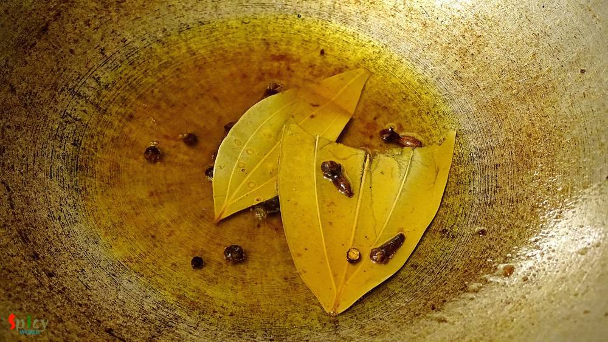
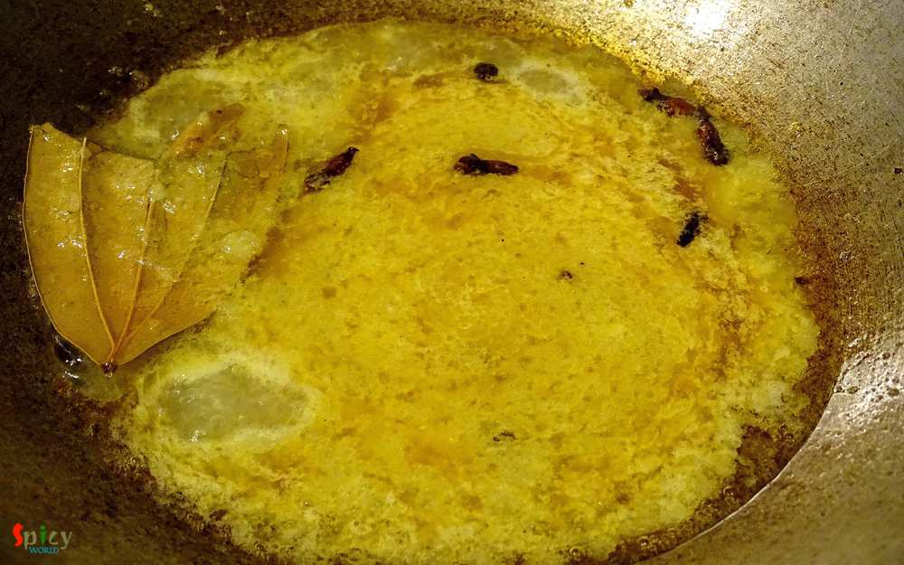
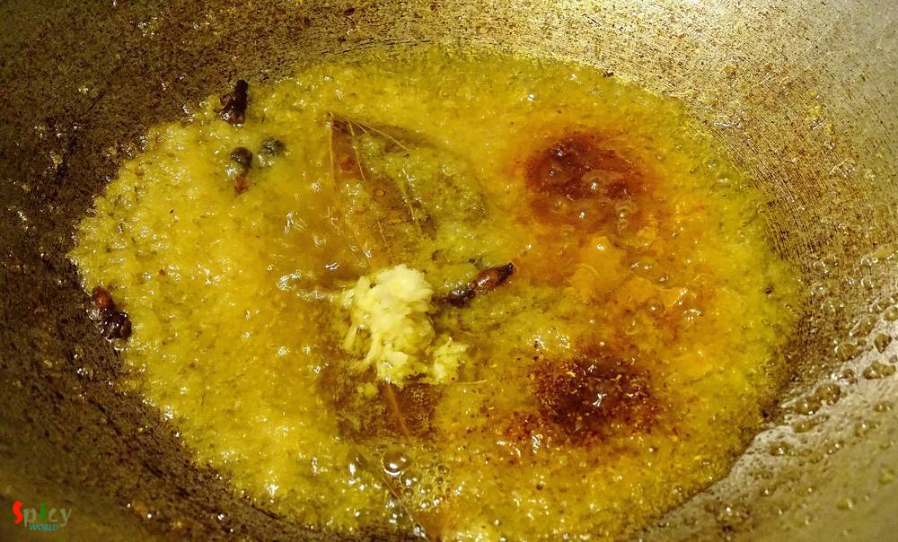
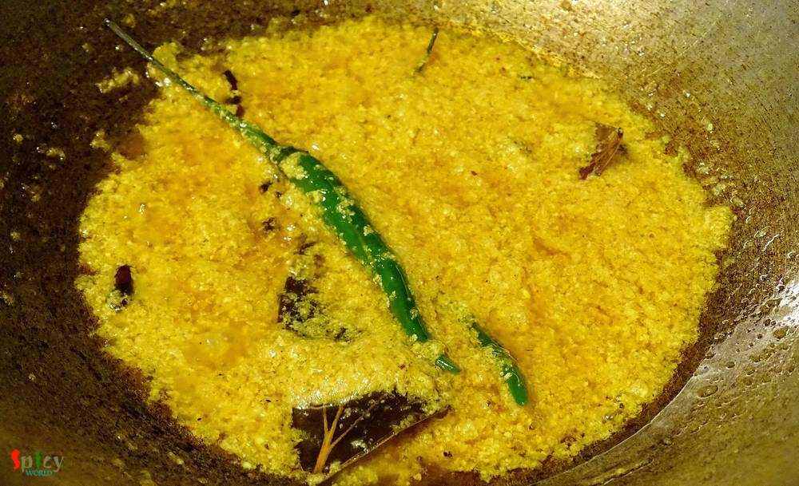

Simple and Easy Recipes
Fish curry with yogurt / Doi Maach
© 2016 Spicy World, Published on: Mar 3, 2016
We bengalis usually eat 3-4 items with rice in lunch. Yess, its the family tradition in every household in Bengal. Whereas in USA, either it's lunch or dinner, I always make one curry with rice or roti. Sometimes I wonder how our moms, grand mas and mom-in-laws gets time to cook so many items. 'Doi Maach' is an another tasty bengali fish curry which goes very well with steamed rice. It's a classic and traditional dish, in which the fried fishes are cooked in yogurt based flavourful gravy. Try this easy fish curry recipe in your kitchen and enjoy a perfect lunch with your loved ones.

Ingredients
- 2 big fish pieces.
- 4 Tablespoons of onion paste.
- 1 Teaspoon of ginger and garlic paste.
- 2 - 3 Tablespoons of yogurt.
- Salt and sugar.
- Spice powder (1 Teaspoon of turmeric powder, Half Teaspoon of red chilli powder and Half Teaspoon of garam masala).
- 2 green chilies.
- Warm water.
- Whole spices (1 bay leaf, 5 - 6 black pepper corns, 4 cloves).
- 4 Tablespoons of mustard oil.
- Some chopped coriander leaves.

Steps
Marinate the fish with little salt and half Teaspoon of turmeric powder.
Then fry them in hot mustard oil till golden and keep aside.
In the same oil add all the whole spices.

Then add onion paste and cook for 5 minutes.

Add ginger + garlic paste, salt and all the spice powder. Mix well for 2 minutes.

Now beat the yogurt with 2 Tablespoons of water and half Teaspoon of sugar.
Add the yogurt mixture and green chilies in oil. Stir continuously for a minute.

Then add fried fish pieces and some warm water. Mix gently and cook for 3 minutes in medium flame.
Sprinkle some chopped coriander leaves and turn off the heat.

Your doi maach is ready ...
Enjoy them hot with steamed rice ..
")